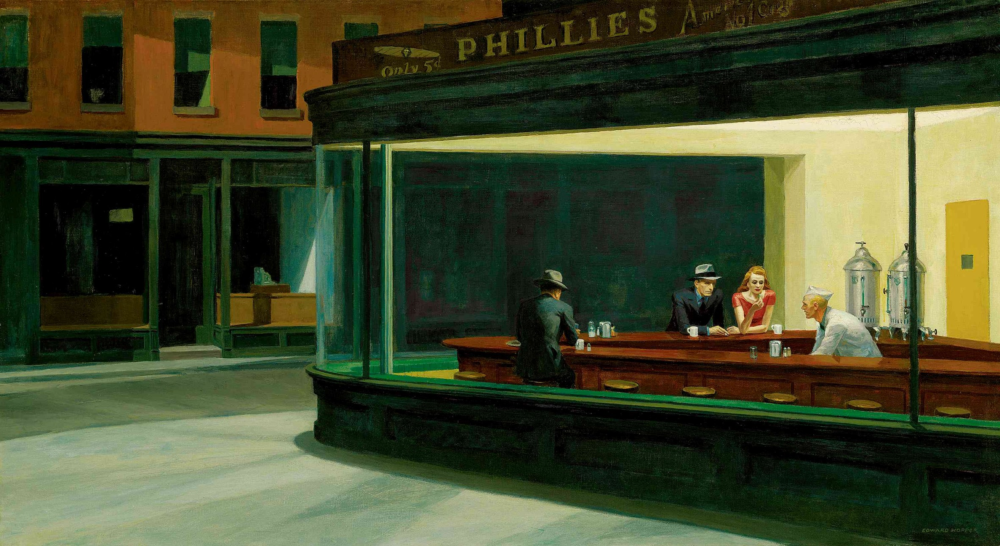

Siempre reticente a la hora de hablar sobre sí mismo y su obra, Hopper simplemente dijo: "La respuesta completa está en el lienzo." Hopper era estoico y fatalista — un hombre silencioso e introvertido con un amable sentido del humor y de conducta franca. Hopper se sentía atraído por un simbolismo emblemático y anti-narrativo, que expresaba en breves momentos, saturados de sugestión. Sus espacios silenciosos e intranquilos nos tocan donde más vulnerables somos, y tienen una patina de melancolía, siendo esa melancolía representada.